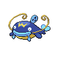

📖 英語版の図鑑説明
Strikes its caudal fin against the swamp bed to shake the ground and startle its prey. It will then swallow the fleeing prey whole. People mistook this behavior as the cause of earthquakes.
日本語訳
尾びれで地面を揺らして獲物を驚かせ、逃げる獲物を丸飲みします。かつて地震の原因と誤解されました。
📝 この図鑑文に出てくる英単語
| 英単語 | 意味 | 品詞 | レベル |
|---|---|---|---|
| strikes | 打つ | 動詞 | 高校 |
| caudal | 尾の | 形容詞 | 大学 |
| swamp | 沼 | 名詞 | 大学 |
| startle | びっくりさせる | 動詞 | 大学 |
| prey | えもの | 名詞 | 大学 |
| swallow | 飲みこむ | 動詞 | 高校 |
| fleeing | 逃げている | 動詞 | 大学 |
| mistook | まちがえた | 動詞 | 高校 |
文法ポイント to shake は「〜するために」と目的を表す不定詞です。
💡 英語名「Whiscash」の由来
英語名「Whiscash」は、whisker（ひげ）、mustache（口ひげ）とcatfish（ナマズ）を組み合わせた名前と考えられている。フランス語の名前は「Barbicha」で、barbillon（ひげ）、poisson-chat（ナマズ）、「あごひげ」のだじゃれから作られている。
出典 Bulbapedia
📊 ナマズンの種族値
HP110
こうげき78
ぼうぎょ73
とくこう76
とくぼう71
すばやさ60
合計 468
❓ よくある質問
- ナマズンの英語名は？
- ナマズンの英語名は「Whiscash」です。
- ナマズンの英語名「Whiscash」の由来は？
- 英語名「Whiscash」は、whisker（ひげ）、mustache（口ひげ）とcatfish（ナマズ）を組み合わせた名前と考えられている。フランス語の名前は「Barbicha」で、barbillon（ひげ）、poisson-chat（ナマズ）、「あごひげ」のだじゃれから作られている。
- ナマズンは英語版の図鑑でどう説明されている？
- 「Strikes its caudal fin against the swamp bed to shake the ground and startle its prey. It will then swallow the fleeing prey whole. People mistook this behavior as the cause of earthquakes.」と書かれています。日本語にすると「尾びれで地面を揺らして獲物を驚かせ、逃げる獲物を丸飲みします。かつて地震の原因と誤解されました。」という意味です。
ナマズンは第3世代（ホウエン地方）のポケモンです。第3世代（ホウエン地方）の英語名一覧 →